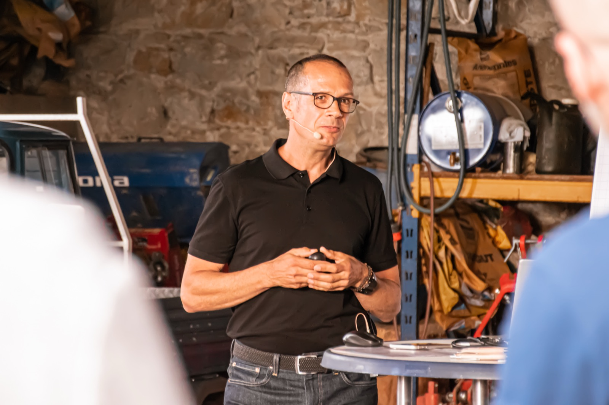

Change-Management
Beschlossen ist noch nicht angekommen.
Die Strategie steht, das Projekt läuft, und trotzdem bewegt sich zu wenig. Ich begleite Unternehmen durch genau diese Phase: wenn Veränderung im Alltag ankommen muss, bei den Menschen, die sie tragen.

Aus dem Werk
Sechs Wochen vor dem Anlauf.
Der Termin für den Produktionsstart steht seit Monaten fest. Entwicklung, Logistik, Montage, Qualität, Lieferanten: Alle arbeiten auf denselben Tag hin. Und dann kommt der Moment, in dem plötzlich nichts mehr selbstverständlich ist.
Ich habe das bei Porsche in Leipzig 25 Mal erlebt, als Leiter Anlaufmanagement. Was ich dabei gelernt habe: Am Ende entscheidet nicht der Plan. Es entscheidet, ob die Menschen wissen, wofür sie verantwortlich sind, und ob sie miteinander reden statt übereinander.
Genau das gilt für jede Veränderung in einem Unternehmen. Egal ob Werk, Verwaltung oder Mittelstand.
Veränderung scheitert selten an der Technik. Sie scheitert an fehlender Klarheit.
Kommt dir das bekannt vor?
- Das Projekt verliert Tempo.Der Plan ist gut, die Termine stehen. Aber Entscheidungen ziehen sich, und keiner fühlt sich richtig zuständig.
- Bereiche arbeiten nebeneinander statt miteinander.Jeder optimiert seinen Teil. Die Reibung an den Schnittstellen kostet Zeit, Energie und gute Leute.
- Führungskräfte sollen den Wandel tragen.Sie stehen selbst mittendrin, sind unsicher und geben das weiter, ob sie wollen oder nicht.
- Viele Meetings, wenig Entscheidungen.Alle sind beschäftigt, aber die Veränderung kommt nicht voran.
- Eine Übergangsphase ohne Führung.Eine Position ist offen oder ein Bereich wird neu aufgestellt. Es braucht jemanden, der jetzt Verantwortung übernimmt.
Vorgehen
Schritt für Schritt zum Gipfel.
Keine Schnelllösung, sondern ein klarer Weg. Wir gehen ihn gemeinsam, mit sicherem Halt und dem Blick fürs Ganze.
Diagnose
Gespräche mit den Beteiligten, ein Blick auf Abläufe und Zusammenarbeit. Am Ende steht ein klares Bild und ein sauberer Auftrag.
Entwicklung
Formate, die zur Lage passen: Workshops mit Teams und Führungskreisen, Klärungsgespräche, Begleitung einzelner Führungskräfte.
Umsetzung
Ich bin dabei, wenn es im Alltag ernst wird. Auf Wunsch übernehme ich auch Führung auf Zeit.
Verstetigung
Wir machen sichtbar, was sich verändert hat, und sichern es, damit es auch ohne mich weiterträgt.
Formen der Zusammenarbeit
Je nach Lage der passende Einstieg.
Team- und Organisationsentwicklung
Wenn Reibung und unausgesprochene Konflikte die Leistung bremsen. Einstieg: Auftragsklärung und ein erster gemeinsamer Workshop.
02Interim- und Umsetzungsbegleitung
Wenn keine Empfehlung mehr gebraucht wird, sondern jemand, der Verantwortung übernimmt. Einstieg: Auftrag, Zeitraum und Rahmen klären.
03Wirksamkeit im Tagesgeschäft
Wenn Meetings viel Zeit kosten und wenig entscheiden. Einstieg: Kurzanalyse eines bestehenden Meetingformats.
Hier steht eine Kundenstimme aus einem Veränderungsprojekt: die Ausgangslage, was Andreas konkret getan hat, was danach anders war.
Termin
Lass uns über deine Veränderung sprechen.
30 Minuten, kostenfrei. Du schilderst die Lage, ich stelle Fragen. Danach weißt du, ob und wie ich helfen kann, und was ein sinnvoller erster Schritt wäre.
Das Buchungstool wird noch festgelegt.